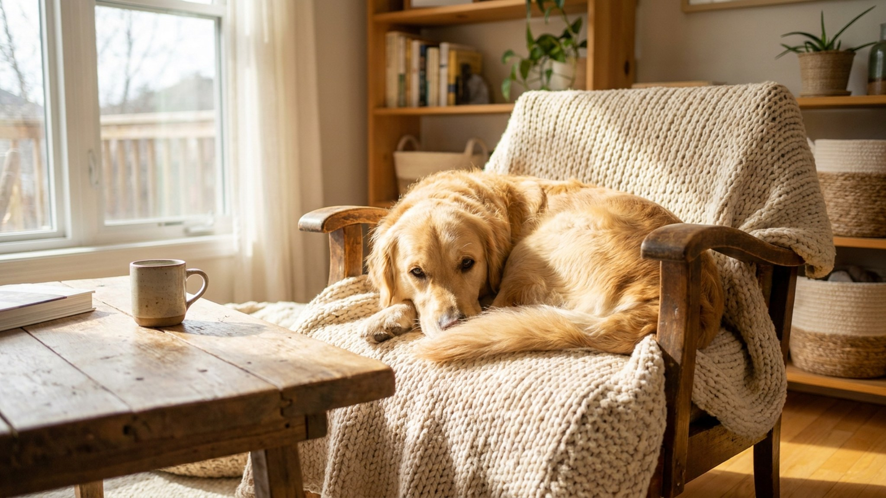

Пёс рванул за котом, и через три секунды его уже не видно: тёмная шерсть, никакого отражения, фонарей нет. Машина притормаживает только когда кто-то попал в свет фар. С сентября утренняя прогулка начинается в темноте, вечерняя заканчивается там же: оба выгула одновременно попали в зону риска. Ниже разбираем, что конкретно помогает и что держать при себе.
🐾 Поставьте приложение заранее
Первая помощь, дневник здоровья и AI-ветеринар 24/7 — в одном месте. Бесплатно: установите, пока не понадобилось.
Установить AnimaLife → Открыть в MAX →
У вас iPhone? AnimaLife есть в App Store
Пассивный светоотражатель на ошейнике виден водителю с 40-50 метров при попадании в фары. Для проезжей части этого хватает с запасом. LED-маяк мигает и виден с любого угла, включая боковой: актуально на нерегулируемых перекрёстках и при переходе дороги по диагонали.
Проверьте отражение вечером: отойдите на 30 метров и посветите фонариком. Если шерсть поглощает свет и ошейника не видно, значит светоотражатель перекрыт или недостаточно широкий. Нужен LED.
Ночью собака видит лучше вас, но ориентируется по запаху, а не по тому, что вы видите. Результат: она уходит за тенью или котом раньше, чем вы успеваете отреагировать.
Привычный маршрут осенью может стать другим. Дорожка через парк без фонарей, которая летом была безопасной, в 19:00 в сентябре выглядит иначе. Стоит пройти её засветло и оценить заново.
Фонарик на телефоне освещает три метра перед собой и садит аккумулятор. Налобный фонарь оставляет руки свободными: удобнее держать поводок и открыть замок дома.
🐾 Что делать, если что-то пойдёт не так
AnimaLife подскажет первые шаги при отравлении, травме, перегреве или укусе — ещё до того, как вы доедете до врача. Пусть будет под рукой.
Открыть первую помощь → Открыть в MAX →
У вас iPhone? AnimaLife есть в App Store
🐾 Понравился разбор?
Подпишитесь на канал — каждый день разбираем по одному тревожному симптому у кошек и собак: что в пределах нормы, а когда пора к врачу. Подпишитесь, чтобы не пропустить разбор, который может спасти здоровье вашего питомца.